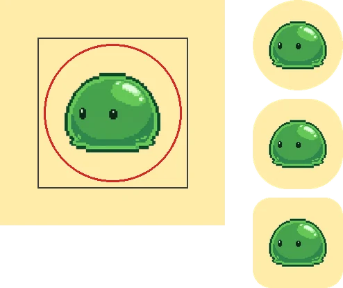
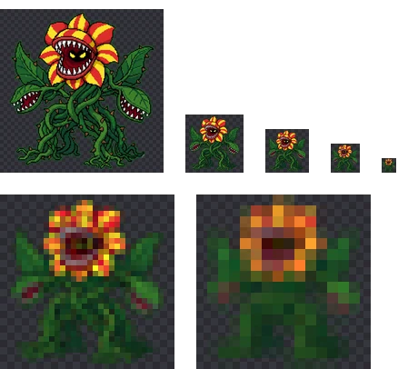

앱 아이콘·파비콘 크기 규격 정리: iOS·Android·웹
아이콘 하나를 만들어도 올리는 곳마다 요구하는 크기와 조건이 다릅니다. 특히 iOS는 투명도를 허용하지 않고, Android는 바깥쪽이 잘릴 것을 전제로 그려야 합니다. 플랫폼별 규격과 함께, 투명 PNG로 아이콘을 준비할 때 자주 걸리는 부분을 정리했습니다.
한눈에 보기
| 용도 | 크기 | 조건 |
|---|---|---|
| App Store 아이콘 (iOS) | 1024×1024px | PNG, 투명·알파 채널 없음, 모서리 둥글리지 않음 |
| Android 적응형 아이콘 | 레이어당 108×108dp (xxxhdpi 432px) | 앞·뒤 두 레이어, 중요한 부분은 지름 66dp 안 |
| Android 예전 방식 런처 아이콘 | 48dp (48·72·96·144·192px) | mdpi~xxxhdpi 밀도별 |
| Google Play 스토어 아이콘 | 512×512px | 32비트 PNG, sRGB, 1024KB 이하, 꽉 찬 정사각형 |
| 파비콘 | 16·32·48px (ICO) 또는 48의 배수 PNG | 검색 결과용은 48×48 이상 권장 |
| iOS 홈 화면 바로가기 (apple-touch-icon) | 180×180px | 불투명 권장 |
| 웹 앱 매니페스트(PWA) | 192×192, 512×512px | maskable 아이콘은 반지름 40% 원 안에 중요한 부분 |
iOS: 1024px 하나, 그리고 투명도 금지
App Store에 올리는 아이콘은 1024×1024 PNG입니다. Xcode 14부터는 이 1024px 이미지 하나만 넣으면 기기별 크기를 알아서 만들 수 있어서, 예전처럼 180·167·152·120px를 하나하나 준비하지 않아도 됩니다. 모서리를 둥글게 깎을 필요도 없습니다. 시스템이 마스크를 씌우므로 꽉 찬 정사각형으로 그립니다.
가장 자주 걸리는 조건은 투명도와 알파 채널 금지입니다. 투명한 픽셀이 하나도 없어도, PNG 파일에 알파 채널이 들어 있으면 업로드할 때 거절될 수 있습니다. Chrome에서 BGPeel로 저장한 PNG를 직접 확인해 보니, 이미지가 완전히 불투명해도 알파 채널이 있는 형식(RGBA)으로 저장되어 있었습니다. 그래서 투명 PNG로 만든 캐릭터를 iOS 아이콘으로 쓰려면 마지막에 배경색을 채우고 알파 채널을 빼는 단계가 필요합니다.
배경을 채우고 알파 채널을 빼는 방법은 두 가지입니다. 맥이라면 ‘미리보기’ 앱에서 PNG를 연 뒤 ‘보내기’에서 ‘알파’ 체크를 끄면 됩니다. 이때 투명했던 부분이 의도한 색으로 채워지는지 확인하세요. 파이썬을 쓴다면 아래처럼 배경색을 깐 뒤 RGB로 바꿔 저장합니다.
from PIL import Image
icon = Image.open("icon_1024.png").convert("RGBA")
bg = Image.new("RGBA", icon.size, (126, 200, 248, 255)) # 채울 배경색
bg.alpha_composite(icon)
bg.convert("RGB").save("AppIcon-1024.png") # 알파 채널 없음Android: 바깥 3분의 1은 잘릴 수 있다
Android 8.0부터 쓰는 적응형 아이콘은 앞 레이어(캐릭터·로고)와 뒤 레이어(배경)를 따로 받습니다. 두 레이어 모두 108×108dp이고, 기기는 그중 가운데 72×72dp만 동그라미, 둥근 사각형 같은 모양으로 잘라 보여 줍니다. 바깥 18dp는 시차·흔들림 효과에 쓰이는 여유분입니다. 로고처럼 꼭 보여야 하는 부분은 가운데 지름 66dp 원 안에 두라는 것이 공식 안내입니다.

투명 PNG로 만든 캐릭터는 앞 레이어로 쓰기 좋습니다. 이미 배경이 투명하니 뒤 레이어에 단색이나 무늬를 따로 깔면 됩니다. 앞 레이어 PNG는 432×432px(108dp × xxxhdpi 4배)로 만들고, 캐릭터를 가운데 약 61%(66/108) 안에 넣으세요. Android Studio의 Image Asset 도구에 투명 PNG를 넣으면 밀도별 파일과 미리보기를 만들어 줍니다.
Google Play 스토어 등록 화면의 아이콘은 이와 별개로 512×512px 32비트 PNG(1024KB 이하)를 올립니다. Google Play가 둥근 마스크(아이콘 크기의 30% 반지름)와 그림자를 직접 씌우므로, 모서리를 깎거나 그림자를 넣지 않은 꽉 찬 정사각형으로 준비합니다.
웹: 파비콘, apple-touch-icon, PWA
브라우저 탭의 파비콘은 16·32px에서 보입니다. 여러 크기를 담은 favicon.ico를 쓰거나 PNG·SVG를 <link rel="icon">로 연결합니다. Google 검색 결과에 사이트 아이콘을 띄우려면 48px의 배수(48, 96, 144…) 정사각형을 권장합니다. 이 사이트도 192px PNG 하나를 파비콘으로 연결해 두었습니다.
아이폰에서 ‘홈 화면에 추가’를 했을 때 보이는 아이콘은 apple-touch-icon으로 지정하며 180×180px가 표준입니다. 투명한 부분은 기기에 따라 검게 보일 수 있으니 배경을 채워 두는 편이 안전합니다. 설치형 웹 앱(PWA)은 매니페스트에 192px와 512px 아이콘을 넣고, 모양이 잘리는 기기를 위해 purpose: "maskable" 아이콘을 따로 두면 좋습니다. maskable 아이콘의 안전 영역은 아이콘 너비 40% 반지름의 원입니다.
원본은 한 장, 크고 투명하게
플랫폼마다 크기가 다르다고 아이콘을 여러 번 그릴 필요는 없습니다. 1024px 이상의 원본 한 장을 투명 배경으로 만들어 두면, 위의 모든 크기를 거기서 줄여 만들 수 있습니다. 반대로 작은 이미지를 키우면 흐려지고 계단이 지므로, 원본은 쓸 크기 중 가장 큰 것보다 커야 합니다. 배경을 투명하게 따로 두면 Android 앞 레이어, iOS용 배경색 채우기, 웹용 원형 아이콘처럼 플랫폼마다 다른 배경을 나중에 마음대로 고를 수 있다는 장점도 있습니다. 배경까지 한 장에 그려 버리면 이런 변형을 만들 때마다 다시 그려야 합니다.
작게 줄였을 때 무엇이 사라지나
규격보다 더 중요한 것은 작은 크기에서도 알아볼 수 있는지입니다. 세밀한 식물 몬스터를 180, 64, 48, 32, 16px로 줄여 보았습니다.

48px까지는 꽃 얼굴과 잎이 구분되지만, 32px부터 이빨과 덩굴이 뭉개지고 16px에서는 빨강·노랑 덩어리만 남습니다. 파비콘처럼 16~32px로 쓰일 아이콘은 큰 그림을 줄이기보다, 얼굴만 잘라 쓰거나 형태가 단순한 별도 버전을 만드는 편이 낫습니다.
BGPeel로 여러 크기 한 번에 받기
- 1024px 이상으로 만든 아이콘 원본을 BGPeel에 올리고 배경을 지웁니다. 이미 배경이 투명하거나 배경을 그대로 둘 거라면 ‘지우지 않음’ 모드로 엽니다.
- ‘내려받을 크기’를 1024로 두고 받습니다.
- 크기를 512, 192, 180, 48로 바꿔 가며 다시 받습니다. 변환 결과는 원본 해상도로 남아 있고 줄이기는 받는 순간 적용되므로, 다시 변환할 필요가 없습니다.
- iOS용 1024px는 위의 방법으로 배경을 채우고 알파 채널을 뺍니다.
크기를 줄일 때 BGPeel은 한 번에 크게 줄이지 않고 절반씩 나눠 줄여서, 가는 외곽선이 끊기는 것을 줄입니다. 자세한 동작은 이미지 크기 바꾸기에 있습니다.